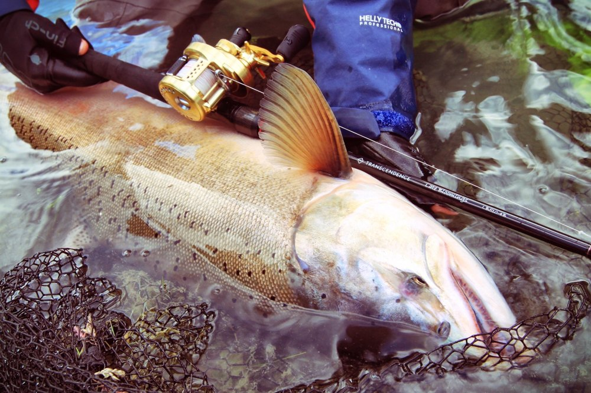
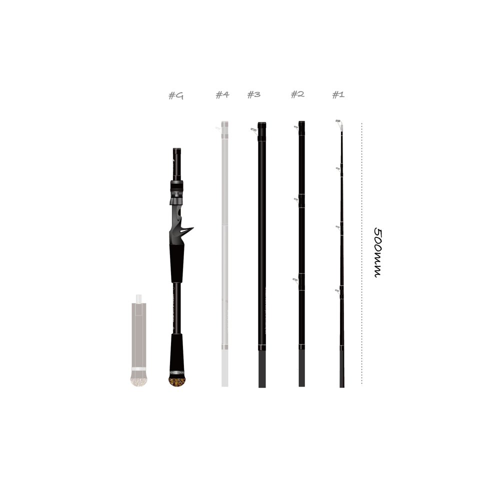
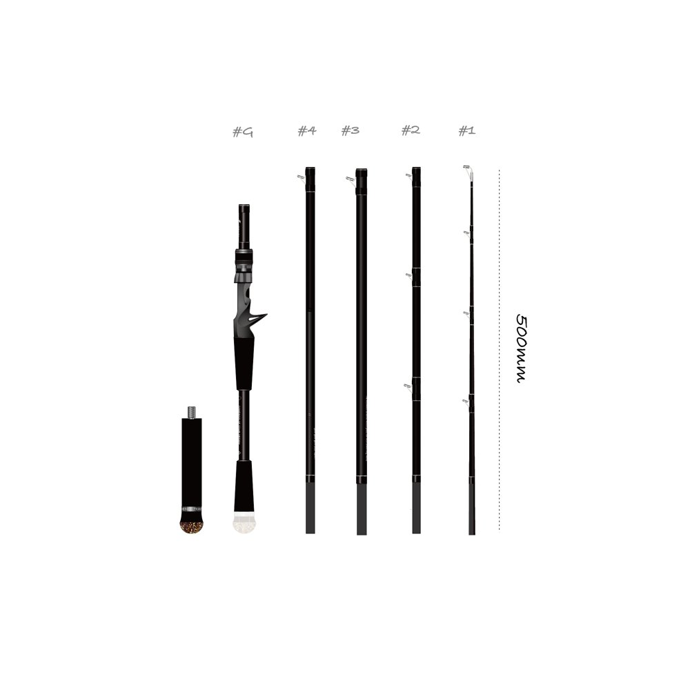
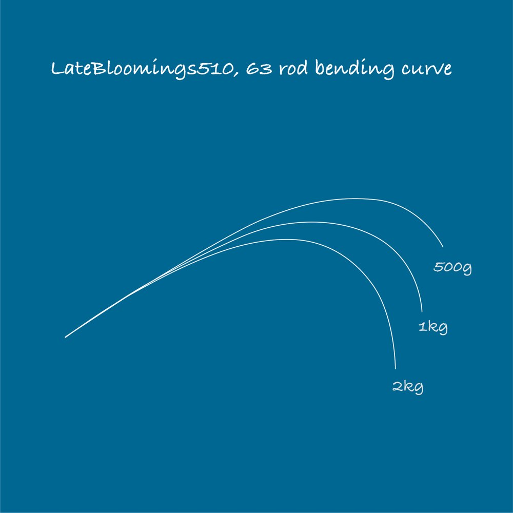
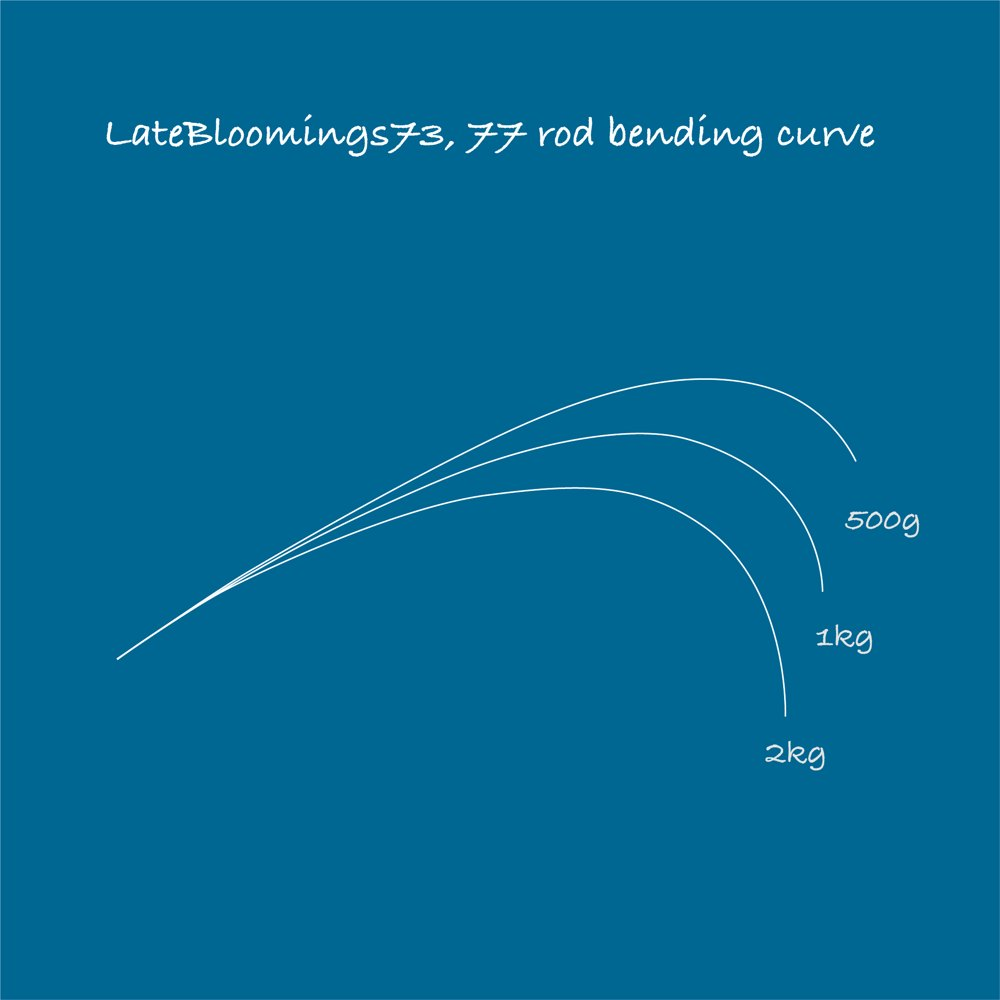

レイトブルーミングス510+
（LateBloomings510+ Rev3.0）
レイトブルーミングス510+（通称「レイブル」）は、パックロッド専門ブランドTRANSCENDENCE（トランスセンデンス）を象徴するフラッグシップのベイトロッドです。
キャッチコピーは「Conquer the world with this one!」。6つのセクションを組み替えて5ft10in・6.3ft・7.3ft・7.7ftの4つの長さに変えられる「4 in 1 system」で、ビッグベイト、ローボートでのキャスティング、ジギングまで、フィールド・魚・釣り方を選ばずに使えます。

画像出典:TRANSCENDENCE公式HP
スペック
- メーカー
- TRANSCENDENCE（トランスセンデンス）
- タイプ
- ベイトロッド（バーサタイル・4in1可変レングス）
- 長さ
- 5ft10in／6.3ft／7.3ft／7.7ft
- 継数
- 変則4〜5ピース（6セクション）
- 仕舞寸法
- 500mm
- 自重
- 156〜221g
- ルアー重量
- 10〜80g（最大120g）
- PEライン
- 1.5〜6号
- ブランク
- 4軸カーボン
- ガイド
- トップはチタントルザイト、ほかはチタン・SiC複合
- グリップ
- 可変フレキシブルグリップ（短いGS・長いGL）
- 価格
- 71,500円（税込）
▼今すぐチェック

レイトブルーミングス510+の特徴
これ1本で世界を釣る。TRANSCENDENCEのフラッグシップ
-
6セクションで4つの長さになる「4 in 1」
#1〜#4のセクションと、短いグリップ（GS）・長いグリップ（GL）の組み合わせで4つの長さに変わる。長さによって支点と重さのバランスが変わるので、それぞれでフィーリングが大きく変わる。
-
ロッド全体で魚を受け止めるブランク
剛竿ではないので10g程度のルアーから投げられ、50〜120gのルアーも操作性よく動かせる。ロッド全体で魚を受け止める設定で、未知のターゲットの力も受け止める強さと柔軟性を持つ。
-
オプションでさらに広がる長さ
別売りの#3ショートセクション・#4ショートセクション・ミドルグリップを組み合わせると、5.3ftから8.7ftまで多段階の長さに変えられる。
4つの長さの使い分け
| 長さ | 組み合わせ | 得意な場面 |
|---|---|---|
| 5ft10in（LB510） | #1+#2+#3+短いグリップ | 南米のローボートでのピーコックバス・トーマン・バラマンディのために作られた長さ。ローボートからのキャスティングに |
| 6.3ft（LB63） | #1+#2+#3+長いグリップ | ビッグベイトのキャスティングや、大型魚を脇に挟んでのファイトに。水深250m程度までのスロージギング・ハイピッチジギングで、ヒラマサや中型カンパチまで |
| 7.3ft（LB73） | #1+#2+#3+#4+短いグリップ | 操作性を重視した遠投モデル。シーバス・アカハタ・ロックフィッシュなどに |
| 7.7ft（LB77） | #1+#2+#3+#4+長いグリップ | 脇挟みでファイトできる遠投モデル。淡水なら30kg程度の魚まで。アカメ・ビワコオオナマズ・イトウなどの大物に |

画像出典:TRANSCENDENCE公式HP

画像出典:TRANSCENDENCE公式HP
500g・1kg・2kgの荷重をかけたときの曲がり方です（上：5ft10in・6.3ft、下：7.3ft・7.7ft）。

画像出典:TRANSCENDENCE公式HP

画像出典:TRANSCENDENCE公式HP
※TRANSCENDENCE公式HPの記載より。仕舞寸法はどの長さでも500mmです。
レイトブルーミングス510+の使い方
まずは行き先と釣り方で長さを選びます。ボートで近い距離を正確に撃つなら5ft10in、ビッグベイトやジギングなら長いグリップの6.3ft、岸から遠投するなら7.3ftか7.7ftです。
日本では、7.3ft・7.7ftでシーバスやアカハタなどのロックフィッシュ、ビワコオオナマズ、アカメなどを狙えます。同じロッドでも長さで別のロッドのように性格が変わるので、釣り場に着いてから組み替えて試してみましょう。
レイトブルーミングス510+がおすすめの人
海外遠征や、いろいろな釣りに1本で行きたい人におすすめです。
対象魚は、ピーコックバス・バラマンディ・トーマンなどの海外の怪魚から、シーバス・ブラックバス・ヒラマサ・ブリ・アカメまで。500mmのケースに4本分の長さを詰め込んで、世界中に持って行けるのが最大の魅力です。
ワンポイント
グリップは短いGSと長いGLを使い分けられます。ビッグベイトを投げるときや大きな魚とファイトするときは長いグリップにして脇に挟み、ルアーを細かく操作したいときは短いグリップにすると、同じ長さのブランクでも使いやすさが変わります。
レイトブルーミングス510+に合わせたいリール
PE1.5〜6号・10〜120gまで扱うベイトロッドなので、太いPEをしっかり巻ける大きめのベイトリールが合います。ビッグベイトや大型魚とのファイトで、ドラグとボディの強さが必要になります。
| リール | 合わせたい理由 |
|---|---|
| シマノ 21カルカッタコンクエスト 300番 |
太いPEを巻ける300番クラスの丸型リール。ビッグベイトのキャストや、ジギング、大型魚とのやり取りに。 |
| ダイワ 22ジリオン TW HD 1000H |
PE2号155m・最大ドラグ6kgのヘビーデューティーモデル。ビッグベイトや近距離のキャスティングに。 |
ジギングや、PE4号以上を長く巻きたい釣りでは、糸巻量の多い300番クラスを選びましょう。
※リールの重さ・糸巻量・ドラグはメーカーの公表値です。最新のラインナップは各メーカーの公式サイトで確認してください。
▼今すぐチェック
レイトブルーミングス510+とあわせてチェックしたいアイテム
-
 プルクラ62B+
TRANSCENDENCE
詳細はこちら＞
プルクラ62B+
TRANSCENDENCE
詳細はこちら＞
同じブランドのベイト。より軽いルアーのバーサタイルならこちら。
-
 カレンテス82S+
TRANSCENDENCE
詳細はこちら＞
カレンテス82S+
TRANSCENDENCE
詳細はこちら＞
同じブランドのスピニング。シーバス向けの8.2ft/9.8ft。
-
 エンピナード91S+
TRANSCENDENCE
詳細はこちら＞
エンピナード91S+
TRANSCENDENCE
詳細はこちら＞
同じブランドの磯のヒラスズキ用。9.1ft/10.8ft。